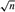

|
|
< Day Day Up > |
|
The substitution method for solving recurrences entails two steps:
Guess the form of the solution.
Use mathematical induction to find the constants and show that the solution works.
The name comes from the substitution of the guessed answer for the function when the inductive hypothesis is applied to smaller values. This method is powerful, but it obviously can be applied only in cases when it is easy to guess the form of the answer.
The substitution method can be used to establish either upper or lower bounds on a recurrence. As an example, let us determine an upper bound on the recurrence
which is similar to recurrences (4.2) and (4.3). We guess that the solution is T (n) = O(n lg n). Our method is to prove that T (n) ≤ cn lg n for an appropriate choice of the constant c > 0. We start by assuming that this bound holds for ⌊n/2⌋, that is, that T (⌊n/2⌋) ≤ c ⌊n/2⌋ lg(⌊n/2⌋). Substituting into the recurrence yields
|
T(n) |
≤ |
2(c ⌊n/2⌋lg(⌊n/2⌋)) + n |
|
≤ |
cn lg(n/2) + n |
|
|
= |
cn lg n - cn lg 2 + n |
|
|
= |
cn lg n - cn + n |
|
|
≤ |
cn lg n, |
where the last step holds as long as c ≥ 1.
Mathematical induction now requires us to show that our solution holds for the boundary conditions. Typically, we do so by showing that the boundary conditions are suitable as base cases for the inductive proof. For the recurrence (4.4), we must show that we can choose the constant c large enough so that the bound T(n) = cn lg n works for the boundary conditions as well. This requirement can sometimes lead to problems. Let us assume, for the sake of argument, that T (1) = 1 is the sole boundary condition of the recurrence. Then for n = 1, the bound T (n) = cn lg n yields T (1) = c1 lg 1 = 0, which is at odds with T (1) = 1. Consequently, the base case of our inductive proof fails to hold.
This difficulty in proving an inductive hypothesis for a specific boundary condition can be easily overcome. For example, in the recurrence (4.4), we take advantage of asymptotic notation only requiring us to prove T (n) = cn lg n for n ≥ n0, where n0 is a constant of our choosing. The idea is to remove the difficult boundary condition T (1) = 1 from consideration in the inductive proof. Observe that for n > 3, the recurrence does not depend directly on T (1). Thus, we can replace T (1) by T (2) and T (3) as the base cases in the inductive proof, letting n0 = 2. Note that we make a distinction between the base case of the recurrence (n = 1) and the base cases of the inductive proof (n = 2 and n = 3). We derive from the recurrence that T (2) = 4 and T (3) = 5. The inductive proof that T (n) ≤ cn lg n for some constant c ≥ 1 can now be completed by choosing c large enough so that T (2) ≤ c2 lg 2 and T (3) ≤ c3 lg 3. As it turns out, any choice of c ≥ 2 suffices for the base cases of n = 2 and n = 3 to hold. For most of the recurrences we shall examine, it is straightforward to extend boundary conditions to make the inductive assumption work for small n.
Unfortunately, there is no general way to guess the correct solutions to recurrences. Guessing a solution takes experience and, occasionally, creativity. Fortunately, though, there are some heuristics that can help you become a good guesser. You can also use recursion trees, which we shall see in Section 4.2, to generate good guesses.
If a recurrence is similar to one you have seen before, then guessing a similar solution is reasonable. As an example, consider the recurrence
T (n) = 2T (⌊n/2⌋ + 17) + n ,
which looks difficult because of the added "17" in the argument to T on the right-hand side. Intuitively, however, this additional term cannot substantially affect the solution to the recurrence. When n is large, the difference between T (⌊n/2⌋) and T (⌊n/2⌋ + 17) is not that large: both cut n nearly evenly in half. Consequently, we make the guess that T (n) = O(n lg n), which you can verify as correct by using the substitution method (see Exercise 4.1-5).
Another way to make a good guess is to prove loose upper and lower bounds on the recurrence and then reduce the range of uncertainty. For example, we might start with a lower bound of T (n) = Ω(n) for the recurrence (4.4), since we have the term n in the recurrence, and we can prove an initial upper bound of T (n) = O(n2). Then, we can gradually lower the upper bound and raise the lower bound until we converge on the correct, asymptotically tight solution of T (n) = Θ(n lg n).
There are times when you can correctly guess at an asymptotic bound on the solution of a recurrence, but somehow the math doesn't seem to work out in the induction. Usually, the problem is that the inductive assumption isn't strong enough to prove the detailed bound. When you hit such a snag, revising the guess by subtracting a lower-order term often permits the math to go through.
Consider the recurrence
T (n) = T (⌊n/2⌋) + T (⌈n/2⌉) + 1.
We guess that the solution is O(n), and we try to show that T (n) ≤ cn for an appropriate choice of the constant c. Substituting our guess in the recurrence, we obtain
|
T (n) |
≤ |
c ⌊n/2⌋ + c ⌈n/2⌉ + 1 |
|
= |
cn + 1 , |
which does not imply T (n) ≤ cn for any choice of c. It's tempting to try a larger guess, say T (n) = O(n2), which can be made to work, but in fact, our guess that the solution is T (n) = O(n) is correct. In order to show this, however, we must make a stronger inductive hypothesis.
Intuitively, our guess is nearly right: we're only off by the constant 1, a lower-order term. Nevertheless, mathematical induction doesn't work unless we prove the exact form of the inductive hypothesis. We overcome our difficulty by subtracting a lower-order term from our previous guess. Our new guess is T (n) ≤ cn - b, where b ≥ 0 is constant. We now have
|
T (n) |
≤ |
(c ⌊n/2⌋ - b) + (c ⌈n/2⌉ - b) + 1 |
|
= |
cn - 2b + 1 |
|
|
≤ |
cn - b , |
as long as b ≥ 1. As before, the constant c must be chosen large enough to handle the boundary conditions.
Most people find the idea of subtracting a lower-order term counterintuitive. After all, if the math doesn't work out, shouldn't we be increasing our guess? The key to understanding this step is to remember that we are using mathematical induction: we can prove something stronger for a given value by assuming something stronger for smaller values.
It is easy to err in the use of asymptotic notation. For example, in the recurrence (4.4) we can falsely "prove" T (n) = O(n) by guessing T (n) ≤ cn and then arguing
|
T (n) |
≤ |
2(c ⌊n/2⌋) + n |
|
≤ |
cn + n |
|
|
= |
O(n) , ⇐wrong!! |
since c is a constant. The error is that we haven't proved the exact form of the inductive hypothesis, that is, that T (n) ≤ cn.
Sometimes, a little algebraic manipulation can make an unknown recurrence similar to one you have seen before. As an example, consider the recurrence
which looks difficult. We can simplify this recurrence, though, with a change of variables. For convenience, we shall not worry about rounding off values, such as , to be integers. Renaming m = lg n yields
T (2m) = 2T (2m/2) + m.
We can now rename S(m) = T(2m) to produce the new recurrence
S(m) = 2S(m/2) + m,
which is very much like recurrence (4.4). Indeed, this new recurrence has the same solution: S(m) = O(m lg m). Changing back from S(m) to T (n), we obtain T (n) = T (2m) = S(m) = O(m lg m) = O(lg n lg lg n).
We saw that the solution of T (n) = 2T (⌊n/2⌋) + n is O(n lg n). Show that the solution of this recurrence is also Ω(n lg n). Conclude that the solution is Θ(n lg n).
Show that by making a different inductive hypothesis, we can overcome the difficulty with the boundary condition T (1) = 1 for the recurrence (4.4) without adjusting the boundary conditions for the inductive proof.
|
|
< Day Day Up > |
|